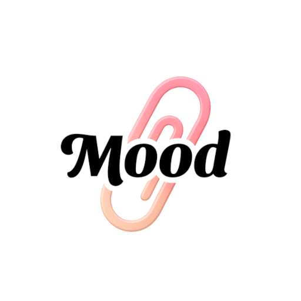
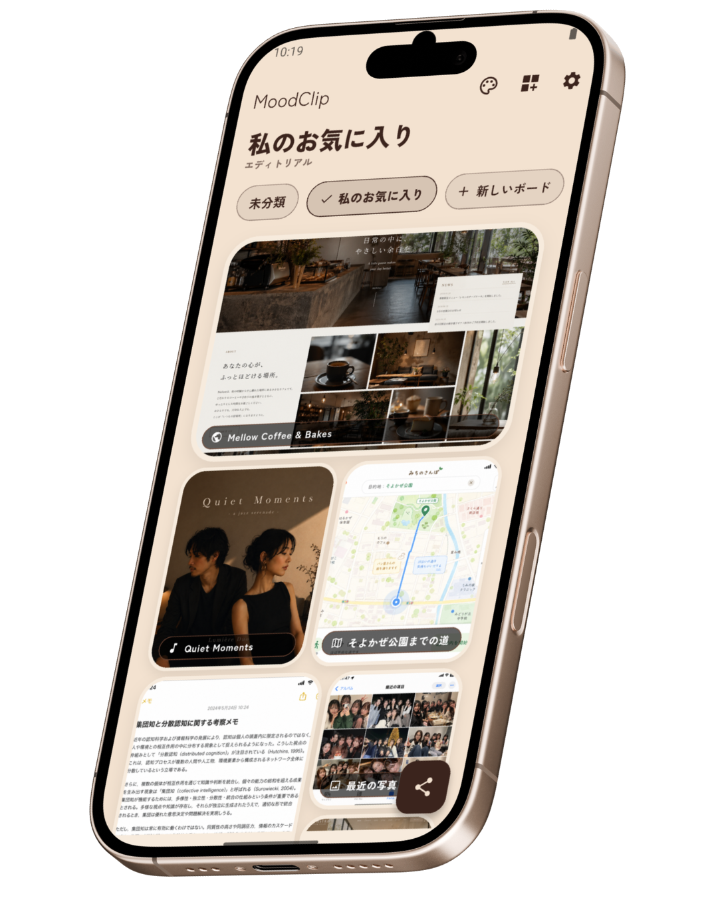
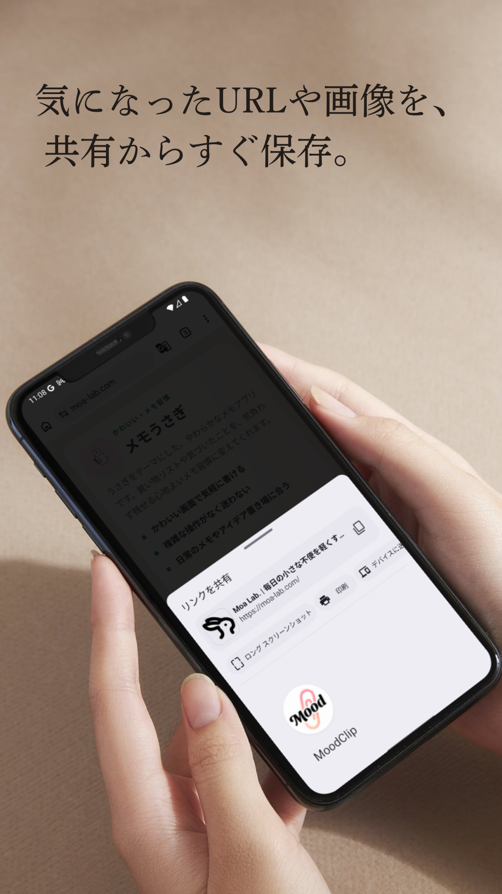
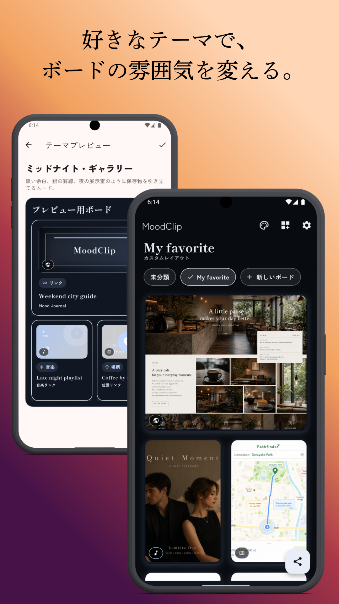
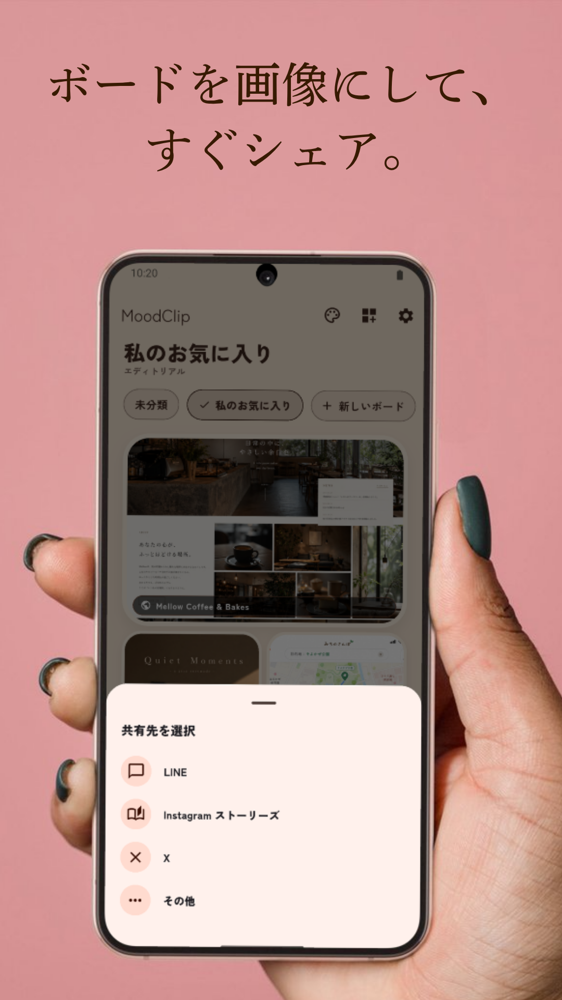
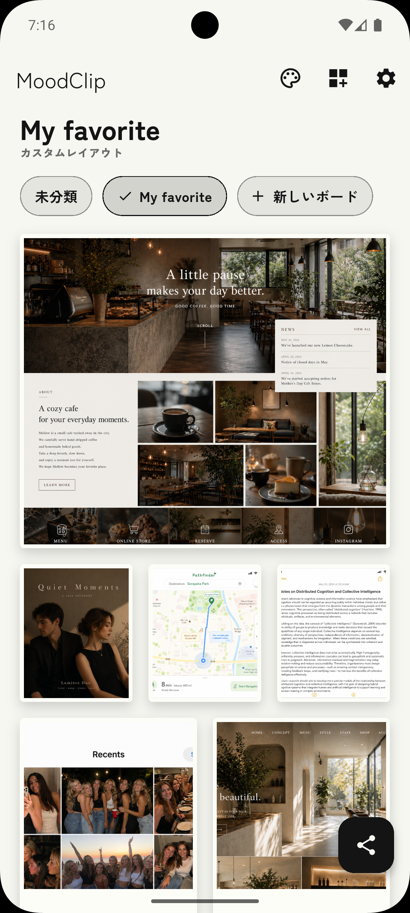
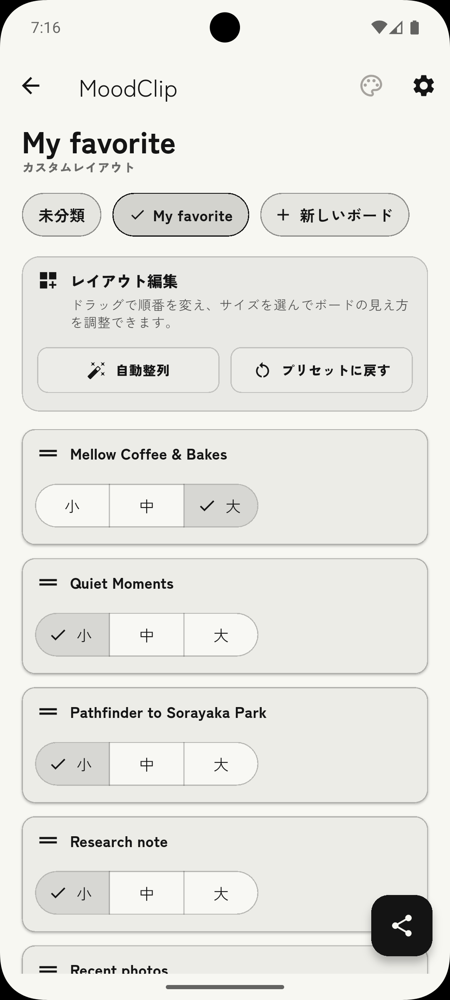
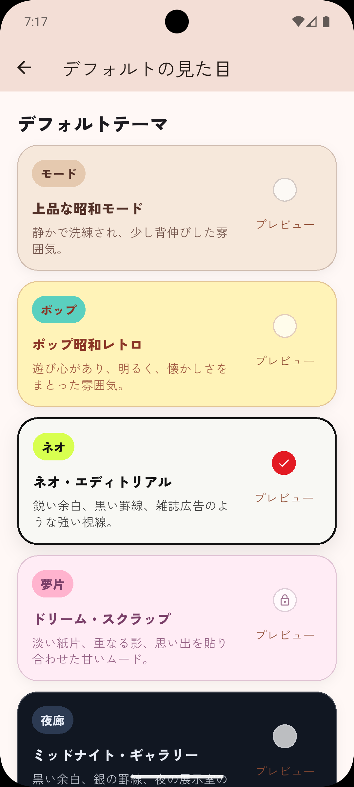

共有からすぐ保存
ブラウザやSNSから共有して、気になった瞬間のままボードへ残せます。

MoodClipMoodClip for Android
気になったページ、画像、短いメモ、音楽や場所へのリンク。 MoodClipは、集めた素材を世界観ごと眺めて、1枚の画像としてシェアできるムードボードアプリです。

Concept
あとで見たいWebページ、好きな写真、ふと思いついた一言。 それぞれ別々に保存すると、残したかった雰囲気はすぐに散らばってしまいます。
MoodClipは、情報をきれいに分類するためだけのアプリではありません。 気になったものをひとつのボードに集めて、見返す時間まで心地よく整えます。
Features
ブラウザやSNSから共有して、気になった瞬間のままボードへ残せます。
URL、画像、メモ、音楽や場所へのリンクを、ひとつの世界観として見返せます。
レトロ、ポップ、ネオ、夢片など、保存した素材に合う見た目へ切り替えられます。
できあがったボードを1枚の画像として書き出し、SNSやメッセージへ共有できます。
How to Use
残したい素材を見つけたら、Androidの共有メニューからMoodClipへ。
テーマや並びを整えながら、自分だけのムードボードとして眺めます。
仕上がったボードを画像にして、そのままSNSや友だちへ共有できます。
Mood Details
保存入口、テーマ選択、画像シェアまで、MoodClipらしい誌面感を保ったまま操作できます。



Screens
保存した素材がただ並ぶだけではなく、見返したくなるまとまりとして表示されます。 編集画面では、サイズや順番もボードに合わせて調整できます。



FAQ
Google Playからインストールできます。ページ上部と下部のバッジからストアページへ移動できます。
Webページ、画像、短いテキスト、音楽や位置情報へのリンクなど、気になった素材をボードに残す想定です。
仕上げたボードを1枚の画像として書き出し、SNSやメッセージへ共有できます。
現在はAndroid向けアプリとしてGoogle Playで公開しています。
情報を細かく整理するより、好きなものや気になったものを雰囲気ごと見返したい人に向いています。
フッターからプライバシーポリシー、利用規約、特定商取引法に基づく表記を確認できます。
Available Now
気になったものをボードに集めて、あなたの世界観として残せます。